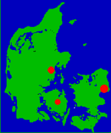
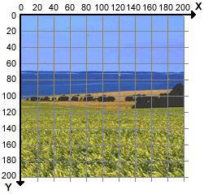

af Andreas Astrup, HTML.dk
Sidst opdateret 6. maj 2001
Klikbare grafikobjekter, billedkort, hotspots eller image maps. Kært barn har mange navne. I denne artikel kan du lære at lave det, vi i det følgende kalder image maps.
Et image map er et billede, hvor forskellige dele er links til forskellige sider. F.eks. kan man på et kort over Danmark lade byerne være links til de respektive kommuner:
Hvis du klikker på en af de røde prikker ryger du enten til København, Århus eller Odense Kommunes websteder. Resten af billedet linker til Danmark.dk. Smart, ik'?.
Images maps er praktiske i forbindelse med grafiske illustrationer. F.eks. kan man lave et kort over Europa, hvor hvert land er et link til en ny side om landet. Eller man kan tage et gruppefoto af de ansatte i virksomheden med mulighed for at klikke den enkelte ansatte og sende vedkommende en e-mail. Eller man kan lave et diagram over holdene i fodboldklubben, hvor et klik vil føre til en ny side med den aktuelle stilling i holdets serie. Eller man kan ...
Der findes to typer images maps.
I dag, hvor alle browsere (fra Netscape 2.0+ og Explorer 2.0+) understøtter image maps, bruges stort set udelukkende client-side image maps. Foruden at være den nemmeste metode har client-side image maps bl.a. den fordel, at det giver brugeren mulighed for at se, hvor et klik på en del af billedet vil tage ham hen. Desuden er client-side image maps også at foretrække pga. tilgængelighed for folk med skærmlæsere.
Denne artikel gennemgår udelukkende, hvordan man laver et client-side image map.
Forestil dig et billede på f.eks. 200 x 200 pixels lagt ind i et koordinatsystem:
Hvert punkt i billedet kan nu angives med et par koordinator (x,y).
Koordinaterne bruges til at angive hvilke dele af billedet, der skal være links til hvad i et image map. Hvis vi f.eks. vil have den vestre halvdel til at være et link til "side1.htm" og den højre halvdel et link til "side2.htm", vil koden se sådan ud:
<img src="billede.gif" usemap="#imagemap" border="0" alt="billede"> <map id="imagemap"> <area href="side1.htm" shape="rect" coords="0,0,100,200" alt="link til side 1"> <area href="side2.htm" shape="rect" coords="100,0,200,200" alt="link til side 2"> </map>
I ovenstående eksempel starter vi med at indsætte et billede - ganske som vi plejer. Eneste forskel er, at der med usemap laves en henvisning til, hvor browseren kan finde informationen til et image map.
Informationerne finder browseren under taget map med det id, der henvises til under usemap (i eksemplet er id="imagemap". Husk at bruge forskellige id'er, hvis du har flere image maps på samme side). Der er i princippet ligegyldigt, hvor i body'en map-taget placeres, men for overblikkets skyld er det en god idé at placere det umiddelbart før eller efter billedet.
Mellem <map> og </map> angives nu oplysningerne om de forskellige områder i vores image map. Til det formål bruges <area>. Man kan lave lige så mange forskellige areas (områder) på et billede, som man ønsker. I ovenstående eksempel er der dog kun lavet to - en venstre og en højre halvdel.
I area defineres hvilken form området har (shape), koordinaterne for området (coords), hvor linket skal pege hen (href) samt en titel (title).
shape angiver formen på området. I eksemplet ovenfor er shape sat til at være lig "rect", hvilket er en forkortelse for "rectangle". Formen er altså en retvinklet firkant. Der kan angives følgende værdier for "shape":
code angiver koordinaterne for området (jf. koordinatsystemet). I eksemplet er koordinaterne for det ene område f.eks. sat til at være "0,0,100,200". De to første numre (0,0) angiver rektangelets øverste venstre hjørne, mens de to sidste (100,200) angiver rektangelets nederste højre hjørne. Koordinaterne angives på følende måde for de forskellige figurer:
href angiver hvor linket skal pege hen (her kan også angives nohref såfremt det angivne område ikke skal være et link). Flere søgemaskiner understøtter ikke image maps og finder derfor ikke sider, der kun linkes til gennem images maps. Ønsker du sådanne sider indekseret af søgemaskinerne, bør du derfor også linke til siderne med almindelige links.
title bruges til at sætte en titel på linket.
I mange tegneprogrammer kan man se koordinaterne for de enkelte punkter i et billede ved at kører musen henover billedet, men med mindre man blot skal lave et simpelt image map som det i eksemplet, kan det anbefales at bruge et program til at finde koordinaterne for de forskellige områder.
Der findes mange forskellige programmer, der kan hjælpe dig med at lave image maps bl.a. FrontPage og Stone's WebWriter. Andre er de to små glimrende shareware programmer CoffeeCup Image Mapper og CuteMAP. Find selv det program du synes bedst om.